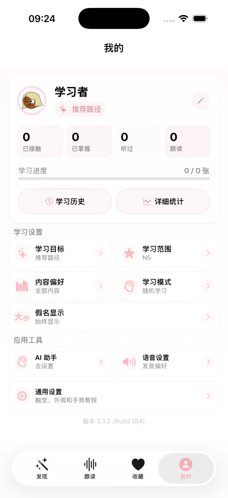

Sakura JP 2.1.2 · iOS 原生体验
把日语学习，
整理成每天愿意
打开的空间。
为中文母语者设计的日语学习工作台。发现新知识、听与跟读、收藏整理，再回到适合今天的复习节奏。
- 中文语境解释
- 本地学习进度
- 可选 AI 辅助

四个学习空间发现 · 跟读 · 收藏 · 我的
JLPT N5–N1词汇、语法、文化与例句
本地优先进度、收藏与音频保存在设备
Learner Workspace
每个页面，都对应一个清楚的学习任务。
不把所有功能挤在一张卡片里。樱语把今天要做的事分成四个可以随时回到的空间。

A calm learning loop
不是连续打卡的压力，而是一个能回来的循环。
内容、听力、收藏和复习使用同一套学习记录，给下一步一个更自然的起点。
- 01
发现适合今天的内容
推荐路径会结合学习范围与进度，搜索覆盖日语标题、假名与中文释义。
- 02
先听，再读，再跟
卡片内可直接听发音；教材音频则进入独立的影子跟读空间。
- 03
收藏真正想留下的知识
知识架支持搜索、筛选，以及 JSON 导入与导出。
- 04
按记忆节奏复习
掌握选择会进入间隔复习，并在学习历史与统计中留下真实记录。
Grammar, connected
语法不再是孤立条目。
语法详情可以展示已审核的关联语法，并提供只读句子分析：把句子中的已知学习点连回现有内容，帮助理解差异与搭配。
- 关联语法与对比提示
- 可编辑句子的只读分析
- 不会自动写入收藏或复习队列
句子分析 · Read only
ここで写真を撮らないでください。
请不要在这里拍照。
～ないでください
请求 · 禁止表达
写真
已存在学习点
Local first
教材、录音和学习记录，优先留在你的设备里。
影子跟读音频、录音、收藏和学习进度以本地体验为核心。在线 AI 是可选项；内置解释与本地学习功能不要求你建立云端账户。
阅读隐私政策